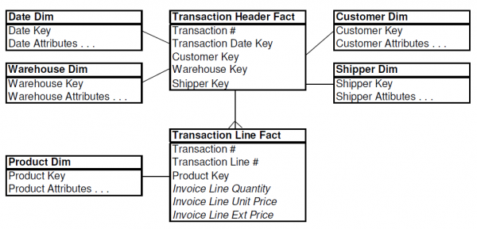
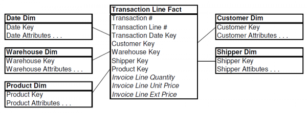

Many transaction processing systems consist of a transaction header “parent†with multiple line item “children.†Regardless of your industry, you can probably identify source systems in your organization with this basic structure. When it’s time to model this data for DW/BI, many designers merely reproduce these familiar operational header and line constructs in the dimensional world. In this Design Tip, we describe two common, albeit flawed, approaches for modeling header/line item information using invoicing data as a case study. Sometimes visualizing flawed designs can help you more readily identify similar problems with your own schemas.
Bad Idea #1
In this scenario, the transaction header file is virtually replicated in the DW/BI environment as a dimension. The transaction header dimension contains all the data from its operational equivalent. The natural key for this dimension is the transaction number itself. The grain of the fact table is one row per transaction line item, but there’s not much dimensionality associated with it since most descriptive context is embedded in the transaction header dimension.
{kind=link}
While this design accurately represents the parent/child relationship, there are obvious flaws. The transaction header dimension is likely very large, especially relative to the fact table itself. If there are typically five line items per transaction, then the dimension is 20% as large as the fact table. Usually there are orders of magnitude differences between the size of a fact table and its associated dimensions. Also, dimensions don’t normally grow at nearly the same rate as the fact table. With this design, you’d add one row to the dimension table and an average of five rows to the fact table for every new transaction. Any analysis of the transaction’s interesting characteristics, such as the customer, warehouse, or shipper involved, would need to traverse this large dimension table.
Bad Idea #2
In this example, the transaction header is no longer treated as a monolithic dimension but as a fact table instead. The header’s descriptive information associated is grouped into dimensions surrounding the header fact. The line item fact table (identical in structure and granularity as the first diagram) joins to the header fact based on the transaction number.

Once again, this design accurately represents the parent/child relationship of the transaction header and line items, but there are still flaws. Every time the user wants to slice-and-dice the line facts by any of the header attributes, they’ll need to join a large header fact table to an even larger line fact table.
Recommended Structure for Header/Line Item Transactions
The second scenario more closely resembles a proper dimensional model with separate dimensions uniquely describing the core descriptive elements of the business, but it’s not quite there yet. Rather than holding onto the operational notion of a transaction header “object,†we recommend that you bring all the dimensionality of the header down to the line items.

Once again, this model represents the data relationships from the transaction header/line source system. But we’ve abandoned the operational mentality surrounding a header file. The header’s natural key, the transaction number, is still present in our design, but it’s treated as a degenerate dimension.